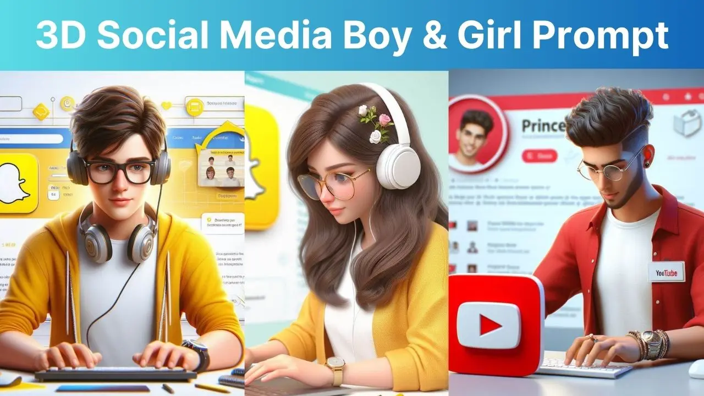

Home / How to Create Viral 3D Social Media Boy and Girl Photos?
How to Create Viral 3D Social Media Boy and Girl Photos?
By Prompt Library•16 April 2024

Hello friends, 3D AI images are becoming a very popular trend on social media. Recently, these social media AI photos have become quite prevalent. In this post, you will get complete information on how you can create these using your smartphone.
Friends, to create such photos, you need to use the Bing AI Image Creator tool by Microsoft. All the people who are creating such photos are using this same tool to create them.
If you know how to create photos, you can simply copy the Image Prompt given below, go to the Bing AI website, paste it, and create a photo according to your preference.
If you don’t know how to create such images, don’t worry, let’s learn the complete process of creating a 3D Social Media Image.
Process To Create 3D Social Media Image
Step 1: First, copy any one of the “Image Prompts” given below, based on the type of photo you want to create.
Step 2: After copying, scroll down and click on the “Create Image” button.
Step 3: Now you will reach the Bing AI website.
Step 4:Paste the Prompt you had copied earlier.
Step 5: Enter your name in the prompt.
Step 6: Click on the “Create Now” button.
After following these steps, friends, you will get 4 photos in front of you. You can download the best one and save it in your gallery.
Congratulations, friends, you have created the best photo with your name, which also looks very beautiful.
You can now post this photo on your social media accounts. You can also use this photo as your Whatsapp & Instagram profile photo, which will look very attractive.
Social Media Boy Photo Editing Prompt
Instagram Prompt For Boys
Want more awesome prompts?
Join our community and get the latest viral prompts daily.
"Create a 3D illustration of an animated character sitting casually on top of a social media logo “Instagram”. The character must wear casual modern clothing such as jeans jacket and sneakers shoes. The background of the image is a social media profile page with a user name “Suresh” and a profile picture that match.
WhatsApp Prompt For Boys
? AI PROMPT
Create a 3D illustration featuring a realistic 26-year-old beautiful Beard boy busy Developing software in front of a 3D logo of “WhatsApp” The boy wearing Green kurta pajama , with glasses , The background of the image should showcase a social media profile page and the username “Harsh” and a matching profile picture and modify it according to your perspective.
YouTube Prompt For Boys
? AI PROMPT
Create a 3D illustration featuring a realistic 25-year-old beautiful Indian realistic boy busy Developing software in front of a 3D logo of “YouTube” The boy wearing Red & white casual Shirts, with glasses , Undercut hair style, The background of the image should showcase a social media profile page and the username “Prince” and a matching profile picture and modify it according to your perspective.
Snapchat Prompt For Boys
? AI PROMPT
Create a 3D illustration featuring a realistic 22-year-old beautiful Boy busy Developing software in front of a 3D logo of “SNAP CHAT” The Boy wearing Yellow & white casual Shirts, with glasses, with headphones , The background of the image should showcase a social media profile page and the username “Priyank” and a matching profile picture and modify it according to your perspective.
Instagram Prompt For Girl
? AI PROMPT
Create a 3D illustration featuring a realistic 24-year-old beautiful girl busy Developing software in front of a 3D logo of “Instagram” The girl wearing red & white Beautiful Dress , with glasses, with headphones , The background of the image should showcase a social media profile page and the username “Sejal” and a matching profile picture and modify it according to your perspective.
WhatsApp Prompt For Girl
? AI PROMPT
Create a 3D illustration featuring a realistic 22-year-old beautiful girl busy Developing software in front of a 3D logo of “Whatsapp” The girl wearing yellow & white Beautiful Dress , with glasses, with headphones , The background of the image should showcase a social media profile page and the username “Shanti” and a matching profile picture and modify it according to your perspective.
YouTube Prompt For Girl
? AI PROMPT
Create a 3D illustration featuring a realistic 20-year-old beautiful girl busy Developing software in front of a 3D logo of “YouTube” The girl wearing purple & white Beautiful Dress , with glasses, with headphones , The background of the image should showcase a social media profile page and the username “Daxa” and a matching profile picture and modify it according to your perspective.
Snapchat Prompt For Girl
? AI PROMPT
Create a 3D illustration featuring a realistic 20-year-old beautiful girl busy Developing software in front of a 3D logo of “SNAP CHAT” The girl wearing Yellow & white casual Shirts, with glasses, with headphones , The background of the image should showcase a social media profile page and the username “Kajal” and a matching profile picture and modify it according to your perspective.
Conclusion
So, friends, in this post we have learned in detail how you can do Viral Instagram photo editing. I hope that these prompts have been very helpful to you.
Friends, if you are facing any problems in creating the photos, you can comment below and let us know. I will try to answer your questions as soon as possible.